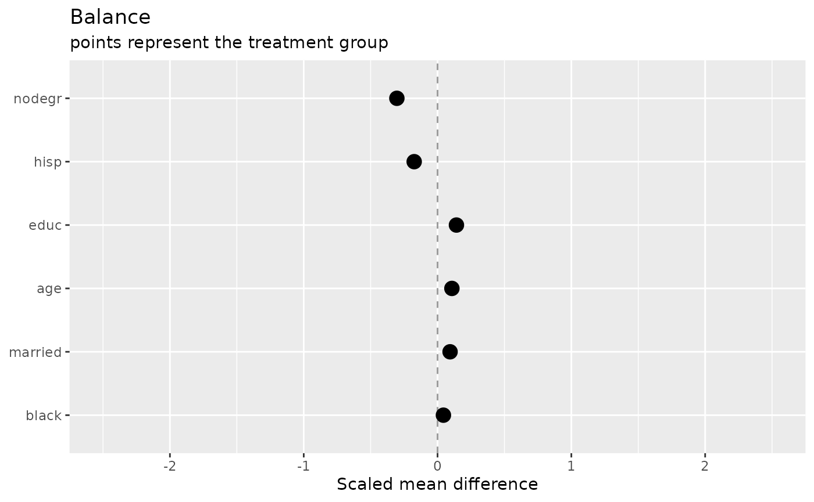
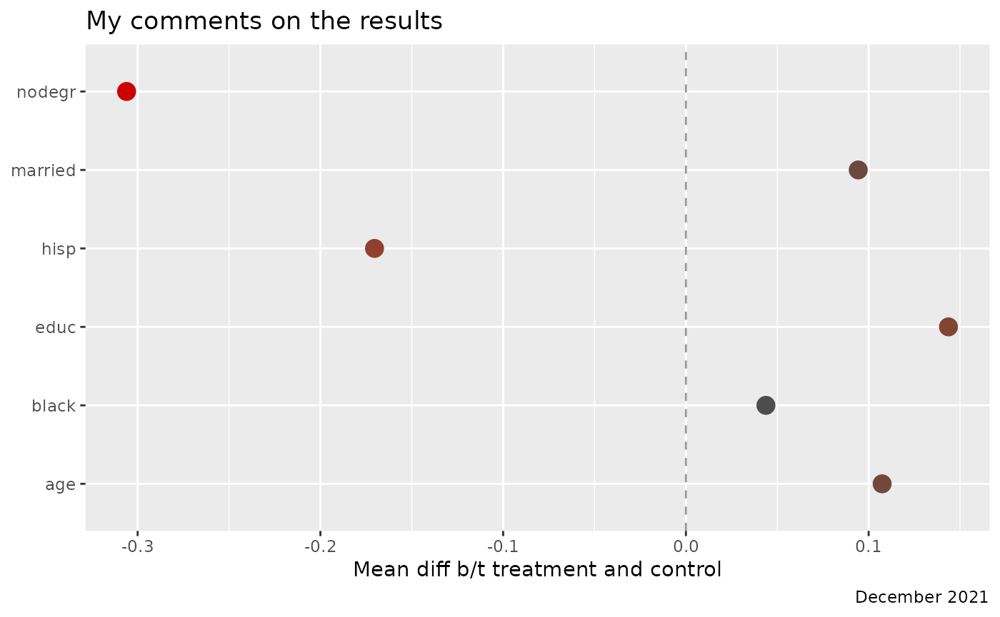

plotBart uses ggplot2 to
construct plots. These functions return ggplot objects that can be
manipulated similar to standard ggplot2::ggplot() calls.
Plot titles, subtitles, labels, captions, and themes can be easily
customized using ggplot syntax.
library(plotBart)
data(lalonde)
confounders <- c('age', 'educ', 'black', 'hisp', 'married', 'nodegr')
# plot balance across treatment and control groups
p <- plot_balance(.data = lalonde,
treatment = 'treat',
confounders = confounders,
compare = 'means',
estimand = 'ATE')
p
Modify the plot labels:
p +
labs(title = 'My comments on the results',
subtitle = NULL,
caption = 'December 2021',
x = 'Mean diff b/t treatment and control')
Extract data to reconstruct the plot:
p$data
#> name variance_FALSE variance_TRUE mean_FALSE mean_TRUE type means
#> 1 age 49.811761 51.194301 25.05385 25.81622 continuous 0.1072771
#> 2 educ 2.606044 4.042714 10.08846 10.34595 continuous 0.1412198
#> variance order flag_means flag_variance flag
#> 1 1.013783 0.1072771 0 0 0
#> 2 1.245506 0.1412198 0 0 0